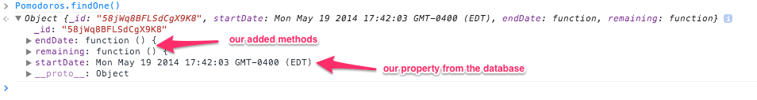
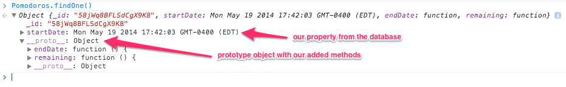

Meteor has a very light-weight model layer compared to web frameworks like Rails. In fact, depending on your definition of what a model layer is, it might not have one at all. It stays very close to MongoDB, providing plain JavaScript object representations of your MongoDB documents.
Often you'll want your Collection objects to have some behavior or computed
properties. In our Meteor workshop we build a
team-based Pomodoro timer app
as an exercise, so we need a Pomodoros collection. We need to know how many
minutes and seconds are left in a given Pomodoro, and whether it's finished or
not, but we don't want to continually update attributes in the database like
completed or timeRemaining. Those can be computed easily based on the start
time.
So we just store a startDate attribute which is a Date object (which
represents a date and time down to the millisecond).
We could have helpers that calculate time remaining and use a
Spacebars
tag like {{timeRemaining this}}. But object-oriented programming was invented
for a reason - sometimes it's nice to actually have methods on your objects.
Change your Collection objects using “transform”
Meteor's Collection constructor
can take an option called transform. You can specify a function that modifies
the objects which are returned:
transform Function
An optional transformation function. Documents will be passed through this function before being returned from fetch or findOne, and before being passed to callbacks of observe, map, forEach, allow, and deny. Transforms are not applied for the callbacks of observeChanges or to cursors returned from publish functions.
Let's add endDate() and remaining() functions that return values calculated
from the startDate attribute. Here's the simplest way:
1 2 3 4 5 6 7 8 9 10 11 12 13 14 | Pomodoros = new Meteor.Collection("Pomodoros", {
transform: function (doc) {
doc.endDate = function () {
// SugarJS gives us minutesAfter() which gives us a nice syntax for
// creating new Date objects
// http://sugarjs.com/api/Number/unitAfter
return ((25).minutesAfter(this.startDate));
};
doc.remaining = function () {
return this.endDate().getTime() - Date.now();
};
return doc;
}
});
|

Give your Collection objects shared methods using a prototype
JavaScript's method of sharing code between objects is to use an object prototype. (If you're used to class-based OO languages like Java, Ruby or Python and aren't sure how JS is different then read about the difference here).
So rather than defining a new function on every object, let's give our Pomodoro
objects a prototype with our endDate() and remaining() functions:
1 2 3 4 5 6 7 8 9 10 11 12 13 14 15 16 17 18 19 20 21 22 | // create an object with the desired methods to use as prototype
var pomodoro = {
endDate: function () {
// SugarJS gives us minutesAfter() which gives us a nice syntax for
// creating new Date objects
// http://sugarjs.com/api/Number/unitAfter
return ((25).minutesAfter(this.startDate));
},
remaining: function () {
return this.endDate().getTime() - Date.now();
}
};
Pomodoros = new Meteor.Collection("Pomodoros", {
transform: function (doc) {
// create a new empty object with pomodoro as it's prototype
var newInstance = Object.create(pomodoro);
// copy the data from doc to newInstance and return newInstance
return _.extend(newInstance, doc);
}
});
|
Here we define an object to use as the prototype (lines 1-12). It has two
functions, endDate() and remaining().
Our transform function creates a new empty object using our object as the prototype (using Object.create()).
It then copies the data fields from doc to it (doc is our object that was
retrieved from the Collection).
So we return a new object with our custom prototype that has the data fields from object that was retrieved from our Collection added to it.

Whichever technique we use, the result is that all objects returned by queries on our Collections end up with our custom methods added to them to provide computed properties.
 Thanks for signing up, and please do give us some feedback!
Thanks for signing up, and please do give us some feedback!